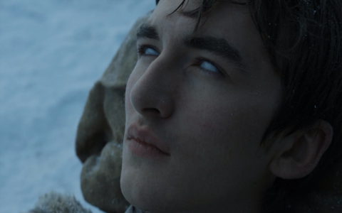

Poor little Bran was crippled and almost killed when flung from the top of a tower by Jaime Lannister. His crime: seeing the Kingslayer canoodle with his twin, Cersei. Bran has been haunted by visions and has the ability to project– or "warg’ – his consciousness into the body of an animal. Studying with the Three-Eyed Raven he has discovered the truth of Jon Snow’s parentage – his half-brother is, in reality, the child of Lyanna Stark.